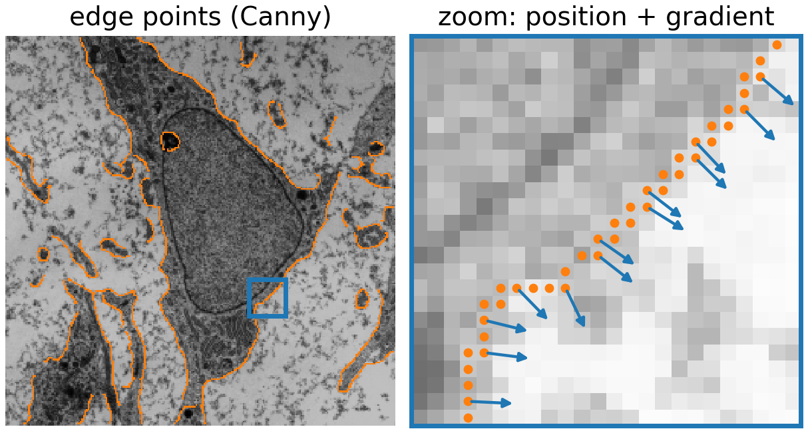
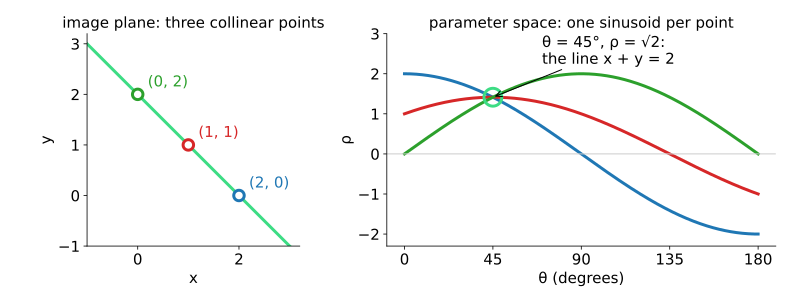
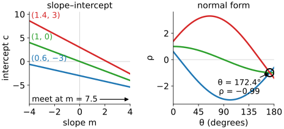
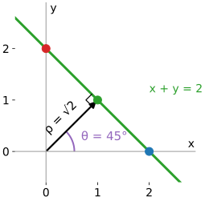
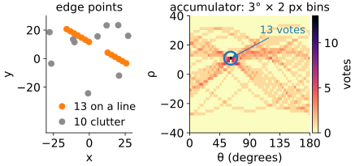
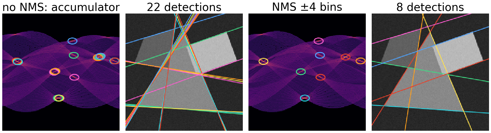
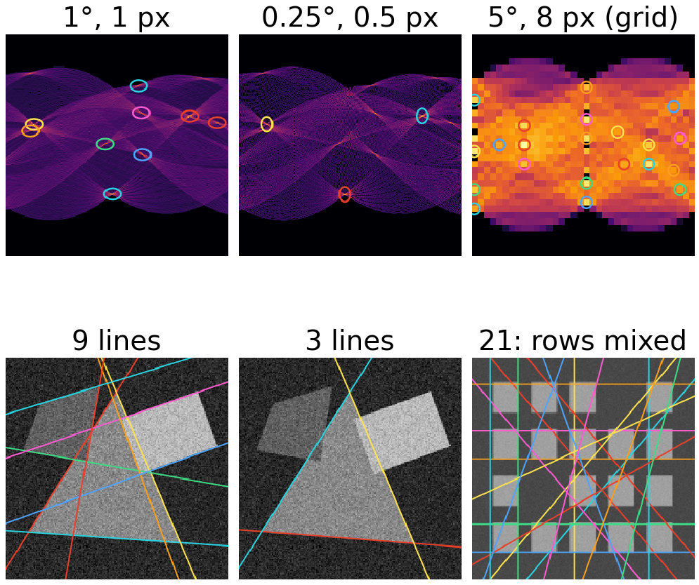
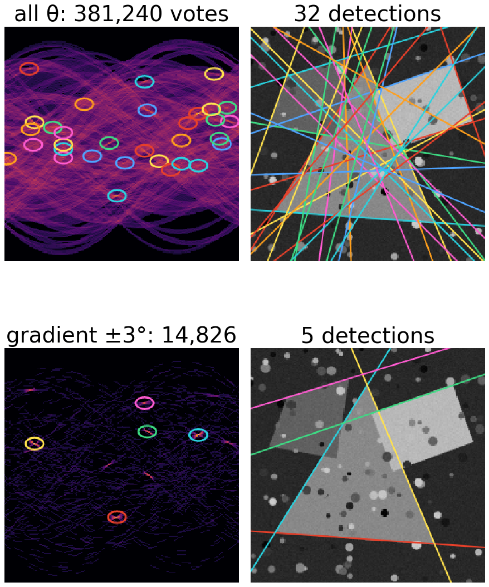
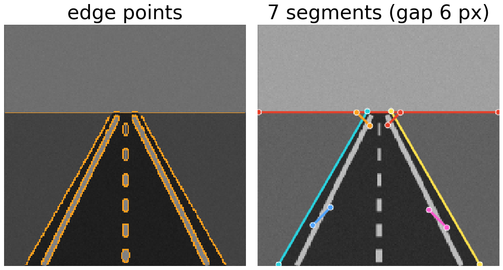
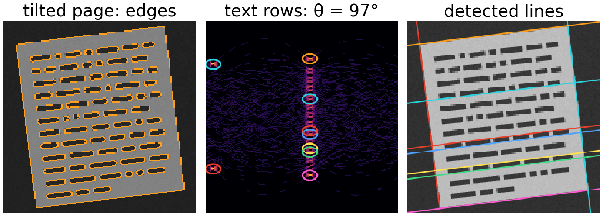

An edge detector gives a cloud of edge points. Some of them lie on straight lines, with gaps, among clutter. How do we find those lines, all of them, at once? The Hough transform (Hough, 1962; Duda & Hart, 1972) turns the question around: every point votes for all lines that pass through it.
Duality: a point in the image is a curve in the space of line parameters; the curves of collinear points meet in one point.
Why slope and intercept fail, and the normal form(\theta, \rho) that works.
The accumulator: votes, peaks, and the choice of bin size and threshold.
Using the gradient direction, finding segments, and three applications.
Slides titled The math give the formulas and proofs; the ideas are complete without them.
The edges day turned an image into thin edges in four steps: smooth (σ), take the gradient, keep only the maxima across the edge (non-maximum suppression), and link with two thresholds (hysteresis). See Edges, Gaussian derivatives and Canny.
For this day the result is a list of edge points: each with a position (x_i, y_i), a direction\theta_i (the gradient, perpendicular to the edge) and a strength.
Thin edges: one point per pixel along the edge, so a line of length L gives about L points.
The direction will save a lot of work later in this unit.

Micrograph: mesenchymal stem cell, Robert M. Hunt, CC BY 3.0, via Wikimedia Commons.
One point, many lines
Through a single point pass infinitely many lines. Each line is described by two numbers (for example an angle and a distance). So the set of all lines through the point is a curve in the plane of those two numbers: the parameter space.
Two points: two curves. They cross where the parameters describe a line through both points: the one line through them.
Three collinear points: three curves through one common point.
Many points on a line, plus clutter: many curves crossing in one place, the others spread out.
Detecting a line = finding where many curves meet.
Duality: points become curves

Left: three points on the line x + y = 2. Right: one curve per point. All three pass through \theta = 45°, \rho = \sqrt2, which are the two numbers of that line.
Try it: points and their curves
Why not slope and intercept?
The obvious parameters: y = mx + c. Each point (x_i, y_i) gives c = y_i - m x_i, a straight line in the (m, c) plane. A nice picture, but:
A vertical line has m = \infty: it is not in the (m, c) plane at all.
A nearly vertical line has a huge m and a huge c: the crossing runs off any finite grid.
So (m, c) cannot be a finite grid of bins, which is what we want to count votes in.
In the demo, preset towards vertical: three points on a steep line; in slope–intercept form their lines meet at m = 7.5, outside the panel.

The same three points in both parameterisations.
The normal form
Describe a line by its normal: the unit vector (\cos\theta, \sin\theta) perpendicular to it, and its signed distance\rho from the origin. A point lies on the line when its projection onto the normal is \rho:
Bounded: every line, vertical ones included, has a \theta in [0°, 180°) and a finite \rho.
For a fixed point, \rho as a function of \theta is a sinusoid.
Worked example, points (2, 0), (1, 1), (0, 2):
θ
0°
45°
90°
135°
(2, 0)
2
1.41
0
−1.41
(1, 1)
1
1.41
1
0
(0, 2)
0
1.41
2
1.41
Only at 45° do all three agree: the line x\cos 45° + y\sin 45° = \sqrt2, i.e. x + y = 2.

The math: sinusoids and their crossings
The curve of a point (x, y) is \rho(\theta) = x\cos\theta + y\sin\theta = A\cos(\theta - \varphi) with amplitude A = \sqrt{x^2 + y^2} (the distance of the point from the origin) and phase \varphi = \operatorname{atan2}(y, x) (its polar angle).
Two points: x_1\cos\theta + y_1\sin\theta = x_2\cos\theta + y_2\sin\theta gives (x_1 - x_2)\cos\theta + (y_1 - y_2)\sin\theta = 0: the normal (\cos\theta, \sin\theta) is perpendicular to \mathbf p_1 - \mathbf p_2, so \theta is the normal direction of the line through the points, and \rho = x_1\cos\theta + y_1\sin\theta.
In [0°, 180°) the two sinusoids cross exactly once (unless the points coincide): one line through two points.
(\theta + 180°, -\rho) is the same line as (\theta, \rho); that is why half a turn suffices, and why the accumulator wraps around at its left and right edges with \rho mirrored.
The accumulator: voting
Make parameter space a grid of bins(\theta_j, \rho_k), all set to zero. For every edge point and every \theta_j: compute \rho = x\cos\theta_j + y\sin\theta_j and add one vote to the bin (\theta_j, \rho).
Each point draws its sinusoid into the grid.
A line with L edge points gives a bin with about L votes: a peak. The vote count is roughly the length of the line in pixels.
Gaps do not matter: votes from the pieces of a dashed line simply add up in the same bin. Neither does the order of the points.
Clutter votes for random bins and raises the floor of the accumulator.

The 13 points of the dashed line give one bin with 13 votes; no other bin gets more than 7.
Peaks: threshold and non-maximum suppression
A line rarely gives a single bin: noise and the finite grid spread its votes over a small cluster of neighbouring bins.
Threshold: keep bins with at least t votes, roughly “lines at least t pixels long”.
Non-maximum suppression in parameter space: keep a bin only if it is the largest in a window around it. Without it, one line gives a cluster of near-identical detections.
The same idea as NMS across an edge (the edges day), and as regional maxima (the morphology day): local maxima above a level.

Demo stills: without and with NMS (threshold 40).
Try it: line detection
Bin size: resolution against noise
Too coarse (\Delta\theta = 5°, \Delta\rho = 8 px): nearby lines fall in the same bin and merge; the angle is only known to a few degrees.
Too fine (\Delta\theta = 0.25°, \Delta\rho = 0.5 px): the votes of one slightly noisy line spread over many bins; the peak dissolves below the threshold.
Rule of thumb: \Delta\rho \approx 1 px, and \Delta\theta such that the far end of a line moves by about one pixel. For a 192 × 192 image (half diagonal 136 px) that is about 0.4°; 1° is a common choice.
Noise in the edge positions widens the peak; clutter (texture, other objects) raises the floor.
In the demo, with noise 18: default bins find 9 lines (strongest peak 110 votes); “bins too fine” finds 3 (strongest 63). “Bins too coarse” on the window grid gives 21 detections that mix neighbouring rows.

Demo stills: accumulators (top) and detections (bottom).
The math: what the accumulator computes
With bins of width \Delta\rho, the accumulator is a sum over edge points of an indicator: H(\theta_j, \rho_k) = \sum_i \big[\, |x_i\cos\theta_j + y_i\sin\theta_j - \rho_k| < \tfrac12\Delta\rho \,\big].
Cost: N_\text{edge} \cdot N_\theta votes, independent of the number of lines. Memory: N_\theta \cdot N_\rho bins.
Angle precision of a segment of length L whose end points are uncertain by \sigma pixels: about \sigma\sqrt2 / L radians. For L = 100, \sigma = 0.5: 0.007 rad = 0.4°. Bins much finer than this split the peak; much coarser bins throw precision away.
A peak can be refined below the bin size: fit a parabola to the peak bin and its neighbours, or refit a line to the points that voted for it (the RANSAC unit).
Use the gradient direction
The gradient of an edge point is the normal of the edge, so \theta_i is already known from Canny (up to 180°: the sign of the gradient does not matter for a line).
Vote only at \theta \approx \theta_i: one bin, or a small window of a few degrees for the uncertainty of the direction.
Votes per point: from N_\theta (180) to a handful (7 for a window of ±3° with 1° bins).
Clutter votes no longer pile up by chance: a random edge point votes only for lines that are perpendicular to its gradient.
Demo, preset “gradient voting”: the cluttered scene goes from 381,240 votes and 32 detections (most of them false) to 14,826 votes and 5 detections.

Demo stills: clutter, all θ (top) and gradient voting (bottom).
From lines to segments
A peak is an infinite line. To find where it actually is:
Collect the edge points within about a pixel of the line.
Sort them along the line.
Split where two consecutive points are more than a gap g apart.
Keep the pieces longer than L_\text{min}.
The gap g decides whether a dashed lane marking is one segment or many; L_\text{min} removes short accidental alignments. Image libraries that return “line segments” from a Hough transform do this.

Demo still: “segments with gaps”.
Applications
Roads and buildings: lane markings, kerbs, window rows. Long straight edges with gaps; segments with a gap tolerance. (Demo: “segments with gaps”.)
Deskewing a scanned page or a tilted micrograph: the text lines all share one \theta. Sum the (squared) votes of each column of the accumulator; the largest column is the tilt. (Demo: “deskew the page”: \theta = 97.0°, a tilt of 7.0°.)
Filaments: microtubules, actin stress fibres, collagen: straight segments in a cluttered, noisy image. Gradient voting and segments. (Demo: “filaments”.) Curved filaments need a different tool: the ridge (Hessian) filters of the edges day.

Demo still: “deskew the page”.
Link: the Radon transform
The Radon transform integrates an image along every line x\cos\theta + y\sin\theta = \rho: one number per (\theta, \rho). Apply it to a binary edge image (1 on edge pixels, 0 elsewhere) and each line integral counts the edge pixels on that line: exactly the Hough accumulator, apart from how a line is discretised.
Same parameters and layout: \theta \in [0°, 180°) across, signed \rho; a single point gives a sinusoid in both.
The Radon day uses the transform for reconstruction (tomography: recover the image from its line integrals); here we only look for its peaks. See Projections and the sinogram.
The math: point–line duality
In homogeneous coordinates a point is \mathbf x = (x, y, 1)^\top and a line is \mathbf l = (a, b, c)^\top, the set \{ax + by + c = 0\}. A point lies on a line when
\mathbf l^\top \mathbf x = 0,
which is symmetric in \mathbf l and \mathbf x: the lines through a fixed point form a line in the space of \mathbf l’s, and the points on a fixed line form a line in the space of \mathbf x’s. The line through two points is \mathbf l = \mathbf x_1 \times \mathbf x_2; the point where two lines meet is \mathbf x = \mathbf l_1 \times \mathbf l_2. The normal form is the choice (a, b, c) = (\cos\theta, \sin\theta, -\rho), which removes the arbitrary scale of \mathbf l and keeps the parameters bounded. (Homogeneous coordinates return in the 3D graphics day.)
Summary
A point in the image is a curve in parameter space; collinear points give curves through one point.
Use the normal form\rho = x\cos\theta + y\sin\theta: bounded, every line included, a point becomes a sinusoid.
Vote into an accumulator; lines are peaks (height ≈ length). Gaps do not matter.
Threshold + NMS in parameter space; choose bins of about 1 px and a fraction of a degree to a degree.
Gradient voting cuts the votes per point from 180 to a few and suppresses clutter.
Peaks are infinite lines; segments come from the points along them.